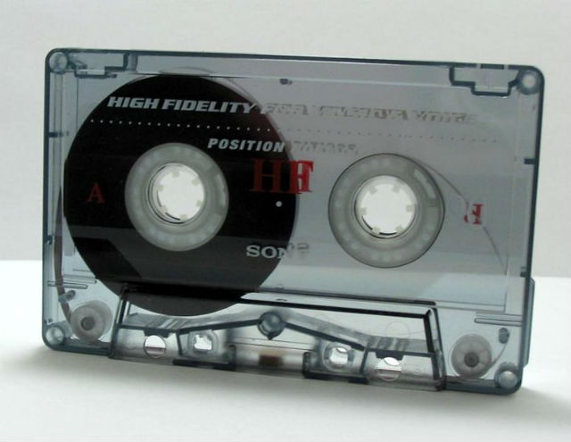
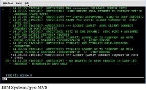
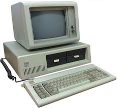

Bối cảnh lịch sử
Các máy tính đầu tiên là máy tính lớn không có bất kỳ hình thức hệ điều hành nào. Mỗi người dùng chỉ sử dụng máy trong một khoảng thời gian theo lịch trình và sau đó đến máy tính có chương trình và dữ liệu, thường là trên bìa đục lỗ và băng từ hoặc băng giấy. Chương trình sẽ được tải vào máy và máy sẽ được thiết lập để hoạt động cho đến khi chương trình hoàn thành hoặc gặp sự cố. Các chương trình thường có thể được gỡ lỗi thông qua bảng điều khiển bằng cách sử dụng quay số, chuyển đổi công tắc và đèn bảng.
Các ngôn ngữ tượng trưng, hợp ngữ và trình biên dịch đã được phát triển giúp cho các lập trình viên dịch mã chương trình tượng trưng thành mã máy vốn trước đây được mã hóa bằng tay. Các máy sau này đi kèm với các thư viện mã hỗ trợ trên bìa đục lỗ hoặc băng từ, sẽ được liên kết với chương trình của người dùng để hỗ trợ các hoạt động như vào/ra. Đây là nguồn gốc của hệ điều hành hiện đại; tuy nhiên, máy móc vẫn chạy một công việc duy nhất tại một thời điểm. Tại Đại học Cambridge ở Anh hàng đợi công việc đã có thời điểm phải dùng một dây phơi trên đó các băng được treo với các chốt quần áo có màu khác nhau để biểu thị mức độ ưu tiên công việc.
Khi máy móc trở nên mạnh mẽ hơn, thời gian để chạy các chương trình giảm dần và thời gian để trao thiết bị cho người dùng tiếp theo trở nên lớn hơn bằng cách so sánh. Ghi chép và thanh toán cho việc sử dụng máy được chuyển từ kiểm tra đồng hồ treo tường sang đăng nhập tự động bằng máy tính. Chạy hàng đợi phát triển từ một hàng người theo nghĩa đen ở cửa, đến rất nhiều phương tiện trên bàn chờ việc, hoặc hàng loạt thẻ đục lỗ xếp chồng lên nhau trên đầu đọc, cho đến khi chính máy có thể chọn và sắp xếp các ổ băng từ nào xử lý băng nào. Khi các nhà phát triển chương trình ban đầu có quyền truy cập để chạy các công việc của riêng họ trên máy, họ được thay thế bởi các nhà khai thác máy chuyên dụng chăm sóc máy và ngày càng ít quan tâm đến việc thực hiện các tác vụ theo cách thủ công.Khi các trung tâm máy tính có sẵn trên thị trường phải đối mặt với hệ lụy của dữ liệu bị mất do giả mạo hoặc lỗi vận hành, các nhà cung cấp thiết bị đã chịu áp lực phải tăng cường các thư viện thời gian chạy để ngăn chặn việc lạm dụng tài nguyên hệ thống. Giám sát tự động là cần thiết không chỉ cho việc sử dụng CPU mà còn để đếm các trang được in, thẻ đục lỗ, đọc thẻ, lưu trữ đĩa được sử dụng và để báo hiệu khi cần có sự can thiệp của nhà điều hành các công việc như thay đổi băng từ và mẫu giấy. Các tính năng bảo mật đã được thêm vào hệ điều hành để ghi lại các đoạn kiểm toán trong đó các chương trình đang truy cập vào file nào và để ngăn truy cập vào file biên chế sản xuất bởi một chương trình kỹ thuật chẳng hạn.
Tất cả các tính năng này được xây dựng theo hướng một hệ điều hành có khả năng đầy đủ. Cuối cùng, các thư viện thời gian chạy đã trở thành một chương trình hợp nhất được khởi động trước công việc của khách hàng đầu tiên và có thể đọc công việc của khách hàng, kiểm soát việc thực hiện, ghi lại việc sử dụng nó, gán lại tài nguyên phần cứng sau khi công việc kết thúc và ngay lập tức xử lý công việc tiếp theo. Các chương trình nền thường trú này, có khả năng quản lý các quy trình nhiều bước, thường được gọi là giám sát hoặc giám sát chương trình trước khi thuật ngữ hệ điều hành được hình thành.
Một chương trình cơ bản cung cấp quản lý phần cứng cơ bản, lập lịch phần mềm và giám sát tài nguyên có vẻ như là tổ tiên từ xa đối với các hệ điều hành hướng người dùng trong kỷ nguyên máy tính cá nhân. Nhưng đã có một sự thay đổi trong ý nghĩa của hệ điều hành. Ngay khi những chiếc ô tô đời đầu thiếu đồng hồ tốc độ, radio và điều hòa không khí mà sau này trở thành tiêu chuẩn, ngày càng có nhiều tính năng phần mềm tùy chọn trở thành tính năng tiêu chuẩn trong mọi gói hệ điều hành, mặc dù một số ứng dụng như hệ thống quản lý cơ sở dữ liệu và bảng tính vẫn có giá tùy chọn và riêng biệt. Điều này đã dẫn đến nhận thức về một hệ điều hành như một hệ thống người dùng hoàn chỉnh với giao diện người dùng đồ họa tích hợp, các tiện ích, một số ứng dụng như trình soạn thảo văn bản và trình quản lý file và các công cụ cấu hình.
Hậu duệ thực sự của các hệ điều hành ban đầu là cái mà ngày nay được gọi là Kernel. Trong giới kỹ thuật và phát triển, ý thức hạn chế cũ của hệ điều hành vẫn tồn tại do sự phát triển tích cực của các hệ điều hành nhúng cho tất cả các loại thiết bị có thành phần xử lý dữ liệu, từ các thiết bị cầm tay cho đến robot công nghiệp và điều khiển thời gian thực - các hệ thống không chạy ứng dụng người dùng ở mặt trước. Một hệ điều hành nhúng trong một thiết bị ngày nay không còn bị loại bỏ như người ta có thể nghĩ từ tổ tiên của những năm 1950.
Hệ điều hành đầu tiên – Cột mốc lịch sử
Hệ điều hành đầu tiên được sử dụng cho công việc thực tế là GM-NAA I/O, được sản xuất vào năm 1956 bởi Bộ phận Nghiên cứu của General Motors cho IBM 704 của họ. Hầu hết các hệ điều hành ban đầu khác cho máy tính lớn của IBM cũng được sản xuất bởi khách hàng.
Các hệ điều hành ban đầu rất đa dạng, với mỗi nhà cung cấp hoặc khách hàng sản xuất một hoặc nhiều hệ điều hành dành riêng cho máy tính lớn của họ. Mỗi hệ điều hành, thậm chí từ cùng một nhà cung cấp, có thể có các mô hình lệnh, quy trình vận hành khác nhau và các phương tiện như các công cụ gỡ lỗi. Thông thường, mỗi lần nhà sản xuất đưa ra một máy mới, sẽ có một hệ điều hành mới và hầu hết các ứng dụng sẽ phải được điều chỉnh thủ công, biên dịch lại và kiểm thử lại.
Sự phát triển của hệ điều hành
-
1945 - 1955
Thế hệ 1
- • Thiết kế, xây dựng, lập trình, thao tác: do 1 nhóm người.
- • Lưu trên phiếu độc lỗ.
-
1955 - 1965
Thế hệ 2

- • Xuất hiện sự phân công công việc.
- • Hệ thống xử lí theo lô ra đời, lưu trên băng từ.
- • Hoạt động dưới sự điều khiển đặc biệt của 1 chương trình.
-
1965 - 1980
Thế hệ 3

- • Ra đời hệ điều hành, khái niệm đa chương.
- • Hệ điều hành chia sẻ thời gian như CTSS của MIT.
- • MULTICS, UNIX.
-
1980
Thế hệ 4

- • Ra đời máy tính cá nhân, IBM PC.
- • Hệ điều hành MS-DOS, MacOS ( Apple Macintosh), MS Windows, OS/1.
- •Linux, QNX, Hệ điều hành mạng,......